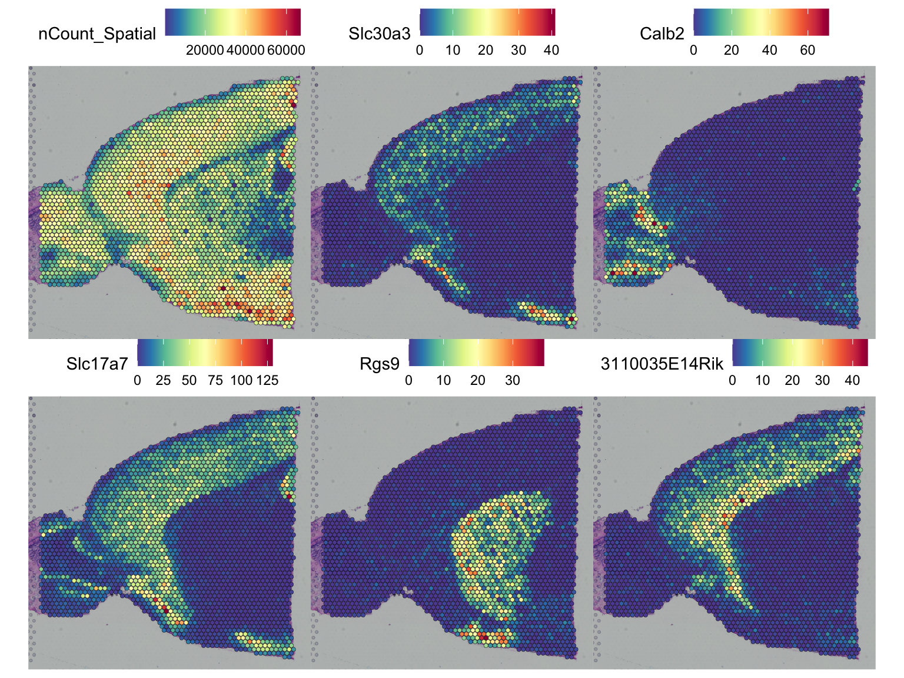

Analysis of spatial transcriptomics with singleCellHaystack
Diego Diez
2020-05-21
a06_example_spatial_transcriptomics.Rmdknitr::opts_chunk$set(warning = FALSE, message = FALSE, fig.align = 'center') library(Seurat, lib = "~/lib/r-site") library(SeuratData) library(singleCellHaystack) set.seed(1)
Load data
anterior1 <- LoadData("stxBrain", type = "anterior1") anterior1
## An object of class Seurat
## 31053 features across 2696 samples within 1 assay
## Active assay: Spatial (31053 features, 0 variable features)Haystack
counts <- GetAssayData(anterior1, slot = "counts") sel.ok <- Matrix::rowSums(counts > 1) > 10 anterior1 <- anterior1[sel.ok, ] anterior1
## An object of class Seurat
## 12382 features across 2696 samples within 1 assay
## Active assay: Spatial (12382 features, 0 variable features)SpatialFeaturePlot(anterior1, features = "nCount_Spatial")

coord <- GetTissueCoordinates(anterior1, "anterior1") counts <- GetAssayData(anterior1, slot = "data") res <- haystack_2D(coord$imagecol, coord$imagerow, detection = as.matrix(counts > 1))
sum <- show_result_haystack(res) head(sum, n = 20)
## D_KL log.p.vals log.p.adj T.counts
## Slc30a3 0.6284539 -95.87279 -91.78000 1060
## Calb2 0.8213488 -95.07903 -90.98624 784
## Slc17a7 0.8537142 -92.57566 -88.48287 2046
## Rgs9 0.6855539 -91.85695 -87.76416 846
## 3110035E14Rik 0.5641125 -90.22181 -86.12902 1263
## Tac1 0.5398548 -89.39674 -85.30395 1133
## Enc1 0.7114751 -88.01895 -83.92615 2003
## Tbr1 0.5386976 -87.83358 -83.74078 990
## Gpr88 0.5196668 -87.45350 -83.36071 1194
## Nrn1 0.5409518 -86.58534 -82.49255 1399
## Rtn4r 0.5436524 -86.38471 -82.29192 933
## Mical2 0.4729012 -83.70597 -79.61318 1159
## Sst 0.5643447 -82.96481 -78.87202 1916
## Scn4b 0.4799798 -82.83056 -78.73777 988
## Doc2g 1.0587883 -82.51851 -78.42572 517
## Adora2a 0.8898467 -82.40753 -78.31474 604
## Drd1 0.8152010 -82.37736 -78.28457 645
## Gng4 0.4640356 -82.02429 -77.93150 1016
## Dkk3 0.4647452 -81.95874 -77.86595 1279
## Cdhr1 1.0990506 -81.33316 -77.24037 480